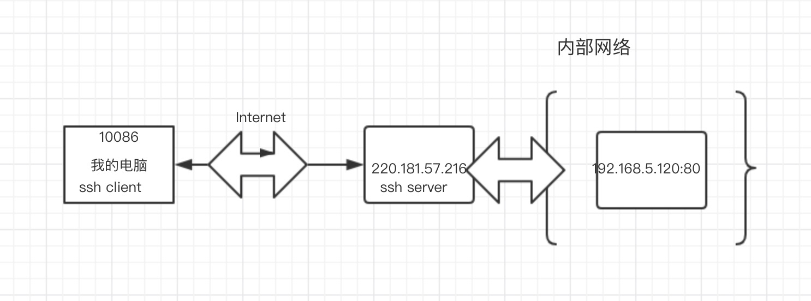
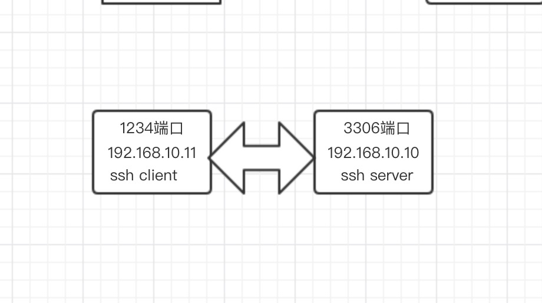
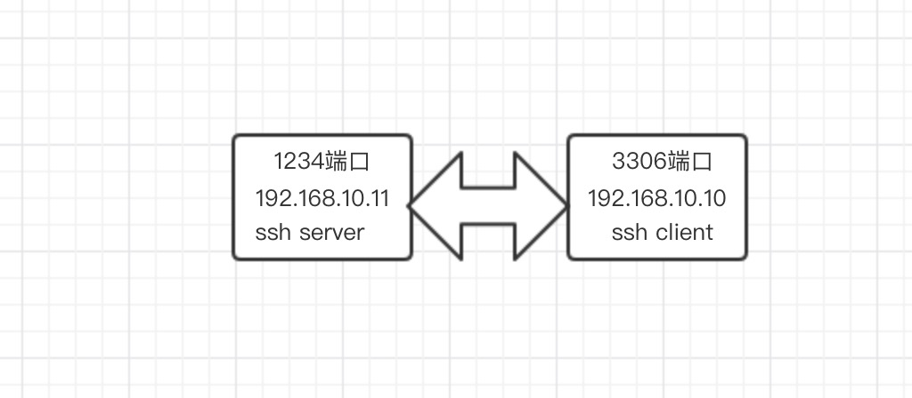
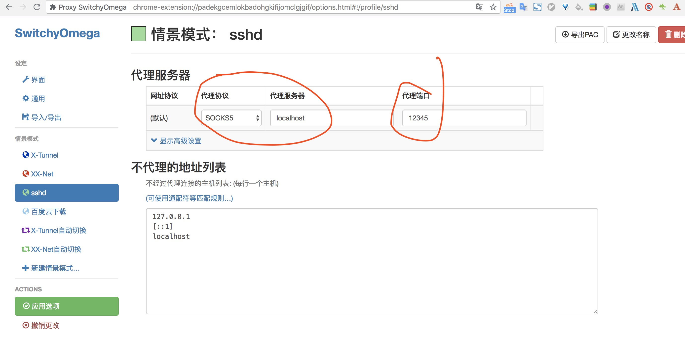
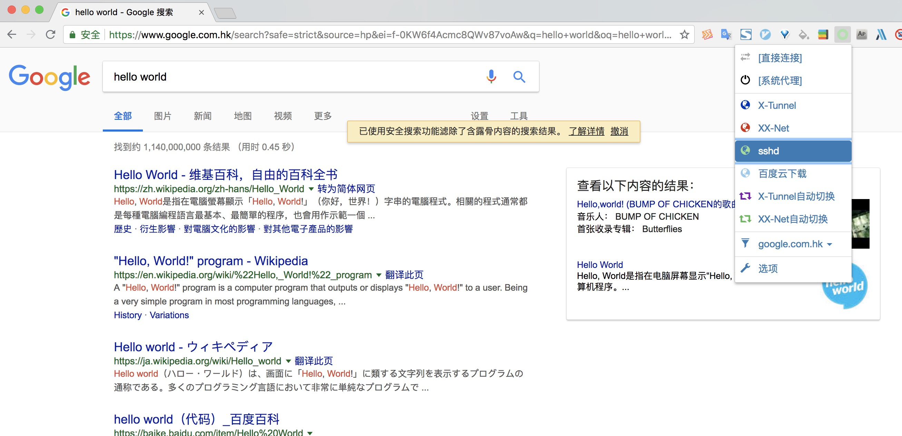

什么是隧道？
我们都知道通过ssh命令可以远程连接上一台机器，然后可以对这台机器进行操作。ssh除了用于远程连接外，还具有一个特殊的功能就是——端口转发 ，它可以将发送到某一个端口的数据转发到另一台机器上的某一个端口，这个特性有点类似于代理，我们也将他称之为ssh tunel(ssh 隧道)。之所以称之为隧道，是因为他在发送端和接收端建立了一条加密的安全的tcp连接，为我们的数据传输提供安全保障。利用隧道技术我们可以突破防火墙的限制，让本身不能直接通讯的机器可以进行通讯，甚至我们还可以借助于隧道技术突破GFW的封锁，实现科学上网。
好了，听完上面这段话，是不是有了想要了解一下的冲动？
如果没有。。。。
那你可能不是一个合格的程序员
好了，让我们赶快来了解一下它是怎么工作的吧！
ssh tunel的工作过程
正向隧道
问题需求：假设有这样一个场景，我在公司内网的一台机器上面部署了一个HTTP服务，他的访问端口是80，ip是：192.168.5.120。如果我现在在正常上班，当然我可以愉快的访问这个ip地址，没有任何阻碍。当我下班，回到家中，突然想起今天还有一件事情没有完成，于是我开心的打开电脑，在浏览器里输入：http://192.168.5.120。当然了我肯定是访问不了的。这时候怎么办？
你可能会告诉我说：“用VPN啊”。嗯，没问题，vpn可以做到。但是我现在不想用vpn。嗯，不要问我为啥这么任性。那有没有其他解决方案？可以让我像在内网环境中一样，愉快的访问这个地址。
答案是：正向隧道，或者说本地转发。叫什么名字不重要，不管哪个名字他们都说的是同一个事情。
前提条件： 做这件事情之前，我们需要一个跳转机，一个我们可以直接通过ssh 登录上去的，一台对外网开放ssh的机器。比如他的ip是： 220.181.57.216。这台外网机器连接了内网，同时对外开放了ssh端口。
正向端口转发命令格式：
1 | ssh -L <local port>:<remote host>:<remote port> <SSH hostname> |
在这个例子中，我们的命令是这样的：
1 | ssh -L 10086:192.168.5.120:80 root@220.181.57.216 |
10086是我们绑定的本地端口，192.168.5.120:80是我们想要访问的内网中的目标机器。
这时候我们通过访问：http://localhost:10086 就相当于访问了http://192.168.5.120:80.
怎么样，是不是很神奇！

上图中，本机的ssh client和远程服务器的ssh server之间建立一条隧道。用户访问10086端口，会将ssh client会将该端口的流量进行加密压缩转发到220.181.57.216上去，220.181.57.216上的ssh server接收到数据，然后再进行解压和解密，然后访问192.168.5.120:80端口。拿到返回数据，在加密传回到ssh client。然后解密，显示数据。
上述整个流程之间访问机器和目标机器之间并未直接建立连接，而是通过端口转发来达到访问目的。
常见的类似的需求还有：为了数据库的安全，数据库一般不允许远程连接，只允许本地连接（localhost）
此时我们可以借助于端口转发，不直接连接远程数据库，来实现对数据库的访问。例如：数据库的访问地址是：192.168.10.10:3306，且只允许localhost访问，我本机的ip是：192.167.10.11 此时我们用数据库连接工具直接连接192.168.10.10:3306是不成功的。
通过：
1 | ssh -L 1234:localhost:3306 root@192.168.10.10 |
然后就可以使用localhost:1234访问数据库了。
注意：上面localhost:3306,并不是代表我本机的地址，而是指192.168.10.10:3306。因为限制了只能使用localhost访问，所以不能使用192.168.10.10这个ip地址。
此时两台机器直接不借助与任何跳转机。

反向隧道
接着上面数据库访问的例子说起，上面通过正向端口转发，突破了数据库只能本地访问的限制。现在假如由于防火墙的原因。192.167.10.11没有开通到192.167.10.10 的ssh访问。而只开通了192.167.10.10-》192.167.10.11的访问权限，那么，正向隧道此时就不管用了。
此时，我们可以借助于ssh -R命令，来实现反向隧道。
命令格式如下：
1 | ssh -R 1234:localhost:3306 root@192.168.10.11 |
此命令需要在目标机器(192.168.10.10)上执行。而不能在客户机上执行。
图示如下：

上图中的数据流向为：192.168.10.11上的应用将数据发送到1234端口，然后ssh server将数据发送到192.168.10.10上ssh client，ssh client转发到的3306端口。然后ssh client再将返回的数据原路转发回去。
正向反向的区别在于连接的方向。从ssh client-》ssh server的叫做正向隧道(本地转发)，反之称之为反向隧道或者远程转发
动态转发
动态转发与正反向隧道的区别在于动态转发端口不是固定的，而正反向隧道都必须指定一个端口，只能访问某一台机器的特定端口，而动态代理可以将本机的所有流量都通过ssh tunel转发出去。
命令格式：
1 | ssh -D local_port user@ip |
其实动态转发就是socks代理，ssh 支持socks4 和socks5代理。
动态转发的妙用：
通过动态转发实现科学上网
我有一台日本的服务器，他可以访问世界上的任何一个网络。但是我自己的电脑，由于在国内，google我是访问不了的。但是我的日本的服务器可以访问，此时利用动态转发，将我本机的流量转发到日本的服务器来实现科学上网。
1 | ssh -D 12345 root@45.32.50.134 |
我的chrome浏览器上装了一个代理插件：[SwitchyOmega]

通过配置让浏览器的流量都发送到localhost:12345端口，此时我们便可以正常访问google，可以科学上网了。
